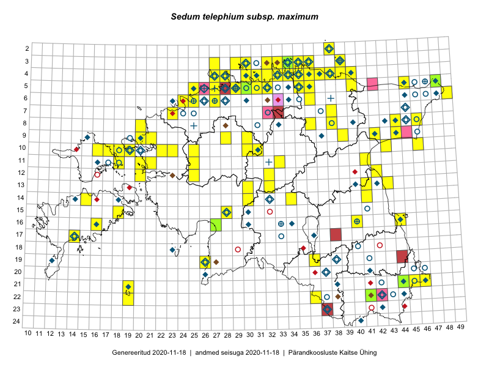

Sedum telephium subsp. maximum — suur kukehari
Crassulaceae :: Sedum maximum Suter (201); Sedum telephium subsp. maximum (L.) Schinz & Thell. (173); Sedum telephium var. maximum L. (17); Sedum maximum (L.) Hoffm. (4)

Kaart põhineb 551 kirjel:
vaatlusi 297
herbaareksemplare 98
PKÜ kirjeid1 142
ELFi kirjeid2 1
LVA kirjeid3 12
EELISe kirjeid4 1
Taime kaasaegsed ja ajaloolised leiukohad asuvad 177 ruudus.
Tingmärgid ja leidudega ruutude arvud periooditi uues (u) ja 2005 andmestikus (v)
| █ | vahemik | u5 | v6 |
|---|---|---|---|
| █ | 2006–2020 | 109 | – |
| ◆/◇ | 1971–2005 | 86 | 92 |
| ○ | 1921–1970 | 65 | 31 |
| + | kuni 1920 | 12 | 0 |
| × | hävinud | – | 0 |
| ? | kaheldav | – | 0 |
| Ruut | Leidja(d) | Leiuaeg | Kirje |
|---|---|---|---|
| 03-34 | Toomas Kukk, Ott Luuk, Kersti Tambets, Sten Mander, Kristine Fenske, Maie Itse | 2020-08-19 | ruut/ala: Sedum telephium subsp. maximum (L.) Schinz & Thell. |
| 06-49 | Toomas Kukk | 2020-08-09 | ruut/ala: Sedum telephium subsp. maximum (L.) Schinz & Thell. |
| 05-32 | Rein Kalamees | 2020-07-12 | ruut/ala: Sedum telephium subsp. maximum (L.) Schinz & Thell. |
| 05-27 | Toomas Kukk, Rein Kalamees, Martin Tikk | 2020-06-17 | PKÜ: 20846 |
| 05-26 | Rein Kalamees | 2020-06-16 | PKÜ: 20849 |
| 04-32 | Ene Kook | 2020-06-11 | PKÜ: 20376 |
| 04-33 | Ene Kook | 2020-06-10 | PKÜ: 20358 |
| 05-27 | Ranno Puumets | 2019-09-03 | ruut/ala: Sedum telephium subsp. maximum (L.) Schinz & Thell. |
| 21-45 | Kaili Kattai | 2019-08-25 | punkt: Sedum maximum (L.) Hoffm. |
| 16-27 | Indrek Tammekänd | 2019-08-13 | TAA0151900: Sedum telephium subsp. maximum (L.) Schinz & Thell. |
| 14-41 | Anneli Palo | 2019-08-13 | LVA: 1772374346 |
| 04-35 | Meeli Mesipuu | 2019-08-08 | punkt: Sedum telephium subsp. maximum (L.) Schinz & Thell. |
| 04-35 | Meeli Mesipuu | 2019-08-08 | ruut/ala: Sedum telephium subsp. maximum (L.) Schinz & Thell. |
| 05-35 | Peedu Saar, Timo Luhamäe | 2019-08-07 | punkt: Sedum telephium subsp. maximum (L.) Schinz & Thell. |
| 03-33 | Ott Luuk, Jaak-Albert Metsoja | 2019-08-07 | ruut/ala: Sedum telephium subsp. maximum (L.) Schinz & Thell. |
| 04-33 | Ott Luuk, Jaak-Albert Metsoja | 2019-08-07 | ruut/ala: Sedum telephium subsp. maximum (L.) Schinz & Thell. |
| 03-34 | Toomas Kukk, Rein Kalamees | 2019-08-06 | TAA0148610: Sedum telephium subsp. maximum (L.) Schinz & Thell. |
| 05-31 | Timo Luhamäe, Peedu Saar | 2019-08-06 | punkt: Sedum telephium subsp. maximum (L.) Schinz & Thell. |
| 03-34 | Rein Kalamees, Toomas Kukk | 2019-08-06 | ruut/ala: Sedum telephium subsp. maximum (L.) Schinz & Thell. |
| 04-34 | Rein Kalamees, Toomas Kukk | 2019-08-06 | ruut/ala: Sedum telephium subsp. maximum (L.) Schinz & Thell. |
| 05-31 | Peedu Saar, Timo Luhamäe | 2019-08-06 | ruut/ala: Sedum telephium subsp. maximum (L.) Schinz & Thell. |
| 04-38 | Ott Luuk, Jaak-Albert Metsoja | 2019-08-06 | ruut/ala: Sedum telephium subsp. maximum (L.) Schinz & Thell. |
| 04-36 | Meeli Mesipuu | 2019-08-06 | punkt: Sedum telephium subsp. maximum (L.) Schinz & Thell. |
| 04-36 | Meeli Mesipuu | 2019-08-06 | ruut/ala: Sedum telephium subsp. maximum (L.) Schinz & Thell. |
| 03-39 | Meeli Mesipuu | 2019-08-06 | ruut/ala: Sedum telephium subsp. maximum (L.) Schinz & Thell. |
| 02-38 | Meeli Mesipuu | 2019-08-06 | ruut/ala: Sedum telephium subsp. maximum (L.) Schinz & Thell. |
| 04-27 | Ott Luuk | 2019-08-02 | ruut/ala: Sedum telephium subsp. maximum (L.) Schinz & Thell. |
| 04-33 | Rein Kalamees | 2019-07-14 | ruut/ala: Sedum telephium subsp. maximum (L.) Schinz & Thell. |
| 22-41 | Toomas Kukk, Indrek Tammekänd | 2019-07-11 | TAA0148827: Sedum telephium subsp. maximum (L.) Schinz & Thell. |
| 10-16 | Toomas Kukk | 2019-07-03 | ruut/ala: Sedum telephium subsp. maximum (L.) Schinz & Thell. |
| 04-28 | Abro Teemusk | 2018-09-08 | LVA: -1954320946 |
| 04-28 | Ott Luuk | 2018-09-07 | ruut/ala: Sedum telephium subsp. maximum (L.) Schinz & Thell. |
| 04-28 | Ott Luuk | 2018-09-07 | punkt: Sedum telephium subsp. maximum (L.) Schinz & Thell. |
| 04-28 | Ott Luuk | 2018-09-07 | punkt: Sedum telephium subsp. maximum (L.) Schinz & Thell. |
| 05-48 | Toomas Kukk, Peedu Saar | 2018-09-04 | TAA0146241: Sedum telephium subsp. maximum (L.) Schinz & Thell. |
| 04-31 | Leida Ojasoo | 2018-08-25 | LVA: -2069530710 |
| 06-49 | Ott Luuk | 2018-08-10 | punkt: Sedum telephium subsp. maximum (L.) Schinz & Thell. |
| 11-18 | Toomas Kukk | 2018-07-09 | ruut/ala: Sedum telephium subsp. maximum (L.) Schinz & Thell. |
| 17-38 | Anneli Palo | 2018-07-04 | LVA: -36559930 |
| 21-46 | Rein Kalamees | 2018-06-19 | punkt: Sedum telephium subsp. maximum (L.) Schinz & Thell. |
| 03-29 | Toomas Kukk | 2017-09-29 | punkt: Sedum telephium subsp. maximum (L.) Schinz & Thell. |
| 11-21 | Ilmar Uibopuu, Ott Luuk | 2017-08-10 | ruut/ala: Sedum telephium subsp. maximum (L.) Schinz & Thell. |
| 05-30 | Rein Kalamees | 2017-08-07 | ruut/ala: Sedum telephium subsp. maximum (L.) Schinz & Thell. |
| 12-32 | Ott Luuk, Thea Kull | 2017-08-07 | ruut/ala: Sedum telephium subsp. maximum (L.) Schinz & Thell. |
| 21-44 | Meeli Mesipuu | 2017-07-31 | TAA0145047: Sedum maximum Suter |
| 06-49 | Toomas Kukk | 2017-07-22 | ruut/ala: Sedum telephium subsp. maximum (L.) Schinz & Thell. |
| 06-49 | Toomas Kukk | 2017-07-21 | ruut/ala: Sedum telephium subsp. maximum (L.) Schinz & Thell. |
| 04-27 | Peedu Saar | 2017-07-20 | ruut/ala: Sedum telephium subsp. maximum (L.) Schinz & Thell. |
| 03-27 | Ott Luuk | 2017-07-20 | ruut/ala: Sedum telephium subsp. maximum (L.) Schinz & Thell. |
| 08-38 | Peedu Saar, Ott Luuk | 2017-07-18 | punkt: Sedum telephium subsp. maximum (L.) Schinz & Thell. |
| 03-30 | Tiina Elvisto | 2017-05-27 | ruut/ala: Sedum telephium subsp. maximum (L.) Schinz & Thell. |
| 04-31 | Sander Laherand, Toomas Kukk | 2016-08-31 | ruut/ala: Sedum telephium subsp. maximum (L.) Schinz & Thell. |
| 10-46 | Meeli Mesipuu, Karin Kikas | 2016-08-31 | ruut/ala: Sedum telephium subsp. maximum (L.) Schinz & Thell. |
| 05-31 | Sander Laherand, Toomas Kukk | 2016-08-30 | ruut/ala: Sedum telephium subsp. maximum (L.) Schinz & Thell. |
| 17-14 | Toomas Kukk, Meeli Mesipuu, Johannes Kõdar | 2016-08-11 | ruut/ala: Sedum telephium subsp. maximum (L.) Schinz & Thell. |
| 14-15 | Peedu Saar, Maret Gerz | 2016-08-11 | ruut/ala: Sedum telephium subsp. maximum (L.) Schinz & Thell. |
| 08-36 | Ott Luuk, Kersti Tambets, Janika Sammasto, Ülle Jõgar, Sten Mander | 2016-08-11 | ruut/ala: Sedum telephium subsp. maximum (L.) Schinz & Thell. |
| 08-36 | Ott Luuk | 2016-08-11 | punkt: Sedum telephium subsp. maximum (L.) Schinz & Thell. |
| 14-15 | Maret Gerz, Peedu Saar | 2016-08-11 | punkt: Sedum telephium subsp. maximum (L.) Schinz & Thell. |
| 08-46 | Ott Luuk, Kersti Tambets, Janika Sammasto, Ülle Jõgar, Sten Mander | 2016-08-10 | ruut/ala: Sedum telephium subsp. maximum (L.) Schinz & Thell. |
| 09-39 | Ott Luuk, Eerik Leibak | 2016-08-09 | ruut/ala: Sedum telephium subsp. maximum (L.) Schinz & Thell. |
| 09-42 | Ott Luuk, Eerik Leibak | 2016-08-05 | ruut/ala: Sedum telephium subsp. maximum (L.) Schinz & Thell. |
| 06-25 | Sander Laherand, Nele Jõessar | 2016-08-01 | punkt: Sedum telephium subsp. maximum (L.) Schinz & Thell. |
| 10-43 | Hannes Pehlak, Ott Luuk | 2016-07-29 | ruut/ala: Sedum telephium subsp. maximum (L.) Schinz & Thell. |
| 04-40 | Tiit Hallikma, Ott Luuk | 2016-07-28 | ruut/ala: Sedum telephium subsp. maximum (L.) Schinz & Thell. |
| 04-33 | Meeli Mesipuu, Timo Luhamäe | 2016-07-28 | ruut/ala: Sedum telephium subsp. maximum (L.) Schinz & Thell. |
| 07-38 | Liina Oja, Eerik Leibak | 2016-07-28 | ruut/ala: Sedum telephium subsp. maximum (L.) Schinz & Thell. |
| 04-39 | Hannes Pehlak, Toomas Kukk, Susanna Vain | 2016-07-28 | ruut/ala: Sedum telephium subsp. maximum (L.) Schinz & Thell. |
| 05-36 | Tõnu Ploompuu, Eerik Leibak | 2016-07-27 | ruut/ala: Sedum telephium subsp. maximum (L.) Schinz & Thell. |
| 06-36 | Peedu Saar, Liina Oja, Susanna Vain | 2016-07-27 | ruut/ala: Sedum telephium subsp. maximum (L.) Schinz & Thell. |
| 04-38 | Thea Kull, Susanna Vain, Eerik Leibak | 2016-07-26 | ruut/ala: Sedum telephium subsp. maximum (L.) Schinz & Thell. |
| 04-37 | Thea Kull, Eerik Leibak, Susanna Vain | 2016-07-26 | ruut/ala: Sedum telephium subsp. maximum (L.) Schinz & Thell. |
| 04-35 | Sander Laherand, Ott Luuk, Nele Jõessar | 2016-07-26 | ruut/ala: Sedum telephium subsp. maximum (L.) Schinz & Thell. |
| 03-33 | Peedu Saar, Timo Luhamäe | 2016-07-26 | ruut/ala: Sedum telephium subsp. maximum (L.) Schinz & Thell. |
| 03-36 | Meeli Mesipuu, Liina Oja | 2016-07-26 | ruut/ala: Sedum telephium subsp. maximum (L.) Schinz & Thell. |
| 04-34 | Hannes Pehlak, Toomas Kukk | 2016-07-26 | ruut/ala: Sedum telephium subsp. maximum (L.) Schinz & Thell. |
| 04-28 | Sander Laherand, Tõnu Ploompuu, Nele Jõessar | 2016-07-25 | ruut/ala: Sedum telephium subsp. maximum (L.) Schinz & Thell. |
| 10-30 | Erkki Otsman, Sergei Smirnov | 2016-07-25 | ruut/ala: Sedum telephium subsp. maximum (L.) Schinz & Thell. |
| 06-49 | Toomas Kukk | 2016-07-23 | ruut/ala: Sedum telephium subsp. maximum (L.) Schinz & Thell. |
| 11-33 | Tõnu Ploompuu, Marko Veinbergs, Eerik Leibak | 2016-07-22 | ruut/ala: Sedum telephium subsp. maximum (L.) Schinz & Thell. |
| 13-30 | Tõnu Ploompuu, Hannes Pehlak, Marko Veinbergs | 2016-07-21 | ruut/ala: Sedum maximum Suter |
| 14-30 | Hannes Pehlak, Tõnu Ploompuu, Marko Veinbergs | 2016-07-21 | ruut/ala: Sedum telephium subsp. maximum (L.) Schinz & Thell. |
| 19-26 | Ott Luuk, Hannes Pehlak | 2016-07-18 | ruut/ala: Sedum telephium subsp. maximum (L.) Schinz & Thell. |
| 04-35 | Tõnu Ploompuu | 2016-07-16 | ruut/ala: Sedum telephium subsp. maximum (L.) Schinz & Thell. |
| 10-18 | Sander Laherand, Toomas Kukk | 2016-07-07 | ruut/ala: Sedum telephium subsp. maximum (L.) Schinz & Thell. |
| 10-19 | Rein Kalamees, Liina Oja | 2016-07-07 | ruut/ala: Sedum telephium subsp. maximum (L.) Schinz & Thell. |
| 22-36 | Kai Rünk, Ülle Jõgar, Illi Tarmu | 2016-06-15 | ruut/ala: Sedum telephium subsp. maximum (L.) Schinz & Thell. |
| 13-43 | Kai Rünk, Ülle Jõgar, Illi Tarmu | 2016-06-10 | ruut/ala: Sedum telephium subsp. maximum (L.) Schinz & Thell. |
| 05-28 | Helene Urva | 2016-05-28 | LVA: 1259361890 |
| 04-39 | Ott Luuk, Tiit Hallikma | 2016-05-19 | ruut/ala: Sedum telephium subsp. maximum (L.) Schinz & Thell. |
| 10-18 | Toomas Kukk, Peedu Saar | 2016-05-13 | punkt: Sedum maximum Suter |
| 14-34 | Aat Sarv | 2015-09-09 | ruut/ala: Sedum maximum Suter |
| 03-32 | Rein Kalamees, Kersti Püssa | 2015-09-06 | ruut/ala: Sedum telephium subsp. maximum (L.) Schinz & Thell. |
| 03-36 | Rein Kalamees, Kersti Püssa | 2015-09-02 | ruut/ala: Sedum telephium subsp. maximum (L.) Schinz & Thell. |
| 04-30 | Rein Kalamees, Kersti Püssa | 2015-09-01 | ruut/ala: Sedum telephium subsp. maximum (L.) Schinz & Thell. |
| 05-30 | Rein Kalamees, Kersti Püssa | 2015-09-01 | ruut/ala: Sedum telephium subsp. maximum (L.) Schinz & Thell. |
| 04-32 | Rein Kalamees, Kersti Püssa | 2015-08-31 | ruut/ala: Sedum telephium subsp. maximum (L.) Schinz & Thell. |
| 09-42 | Tõnu Ploompuu | 2015-08-26–2015-08-29 | ruut/ala: Sedum telephium subsp. maximum (L.) Schinz & Thell. |
| 03-35 | Rein Kalamees, Kersti Püssa | 2015-08-25 | ruut/ala: Sedum telephium subsp. maximum (L.) Schinz & Thell. |
| 04-35 | Rein Kalamees, Kersti Püssa | 2015-08-25 | ruut/ala: Sedum telephium subsp. maximum (L.) Schinz & Thell. |
| 04-37 | Rein Kalamees, Kersti Püssa | 2015-08-24 | ruut/ala: Sedum telephium subsp. maximum (L.) Schinz & Thell. |
| 11-41 | Peedu Saar | 2015-08-22 | ruut/ala: Sedum telephium subsp. maximum (L.) Schinz & Thell. |
| 11-41 | Ulvi Selgis | 2015-08-16 | punkt: Sedum telephium subsp. maximum (L.) Schinz & Thell. |
| 11-41 | Ulvi Selgis | 2015-08-16 | LVA: -1774785082 |
| 05-35 | Rein Kalamees, Kersti Püssa | 2015-08-16 | ruut/ala: Sedum telephium subsp. maximum (L.) Schinz & Thell. |
| 19-36 | Kaili Kattai | 2015-08-16 | ruut/ala: Sedum telephium subsp. maximum (L.) Schinz & Thell. |
| 11-20 | Hanna-Eliisa Luts, Tõnu Ploompuu | 2015-08-13 | ruut/ala: Sedum telephium subsp. maximum (L.) Schinz & Thell. |
| 12-32 | Anneli Palo | 2015-08-13 | LVA: -1675240578 |
| 10-17 | Toomas Kukk, Eerik Leibak | 2015-08-12 | ruut/ala: Sedum telephium subsp. maximum (L.) Schinz & Thell. |
| 06-27 | Tõnu Ploompuu | 2015-08-11 | ruut/ala: Sedum telephium subsp. maximum (L.) Schinz & Thell. |
| 13-41 | Peedu Saar | 2015-08-11 | ruut/ala: Sedum telephium subsp. maximum (L.) Schinz & Thell. |
| 04-28 | Tiina Elvisto, Maria Ksenofontov | 2015-08-09 | ruut/ala: Sedum telephium subsp. maximum (L.) Schinz & Thell. |
| 15-18 | Toomas Kukk, Eerik Leibak | 2015-08-08 | ruut/ala: Sedum telephium subsp. maximum (L.) Schinz & Thell. |
| 08-20 | Marju Erit | 2015-08-01 | ruut/ala: Sedum telephium subsp. maximum (L.) Schinz & Thell. |
| 16-44 | Toomas Kukk, Eerik Leibak | 2015-07-29 | ruut/ala: Sedum telephium subsp. maximum (L.) Schinz & Thell. |
| 11-25 | Hanna-Eliisa Luts, Tõnu Ploompuu | 2015-07-28 | ruut/ala: Sedum telephium subsp. maximum (L.) Schinz & Thell. |
| 09-44 | Ott Luuk, Hannes Pehlak | 2015-07-24 | ruut/ala: Sedum telephium subsp. maximum (L.) Schinz & Thell. |
| 05-45 | Tiit Hallikma, Toomas Kukk | 2015-07-21 | ruut/ala: Sedum telephium subsp. maximum (L.) Schinz & Thell. |
| 06-49 | Ott Luuk, Hannes Pehlak | 2015-07-21 | ruut/ala: Sedum telephium subsp. maximum (L.) Schinz & Thell. |
| 04-40 | Kaili Orav, Silvia Pihu | 2015-07-21 | ruut/ala: Sedum telephium subsp. maximum (L.) Schinz & Thell. |
| 05-40 | Kaili Orav, Silvia Pihu | 2015-07-21 | ruut/ala: Sedum telephium subsp. maximum (L.) Schinz & Thell. |
| 03-30 | Kadi-Liis Kesler, Maria Ksenofontov | 2015-07-20–2015-07-21 | ruut/ala: Sedum telephium subsp. maximum (L.) Schinz & Thell. |
| 08-44 | Peedu Saar, Liina Oja | 2015-07-20 | ruut/ala: Sedum telephium subsp. maximum (L.) Schinz & Thell. |
| 05-29 | Erkki Otsman, Sergei Smirnov | 2015-07-12–2015-07-13 | ruut/ala: Sedum telephium subsp. maximum (L.) Schinz & Thell. |
| 09-20 | Kadi-Liis Kesler | 2015-06-25–2015-10-11 | ruut/ala: Sedum telephium subsp. maximum (L.) Schinz & Thell. |
| 14-41 | Peedu Saar, Ott Luuk | 2015-06-21 | ruut/ala: Sedum telephium subsp. maximum (L.) Schinz & Thell. |
| 04-30 | Rein Kalamees, Kersti Püssa | 2015-06-12 | ruut/ala: Sedum telephium subsp. maximum (L.) Schinz & Thell. |
| 04-31 | Rein Kalamees, Kersti Püssa | 2015-06-12 | ruut/ala: Sedum telephium subsp. maximum (L.) Schinz & Thell. |
| 15-28 | Mari Metsoja, Jaak-Albert Metsoja | 2015-06-12 | ruut/ala: Sedum telephium subsp. maximum (L.) Schinz & Thell. |
| 13-32 | Timo Luhamäe, Meeli Mesipuu | 2015-06-08 | punkt: Sedum maximum Suter |
| 05-35 | Rein Kalamees, Kersti Püssa | 2015-06-06 | ruut/ala: Sedum telephium subsp. maximum (L.) Schinz & Thell. |
| 04-33 | Rein Kalamees, Kersti Püssa | 2015-06-06 | ruut/ala: Sedum telephium subsp. maximum (L.) Schinz & Thell. |
| 05-32 | Rein Kalamees | 2015-06-05 | ruut/ala: Sedum telephium subsp. maximum (L.) Schinz & Thell. |
| 10-22 | Tõnu Ploompuu | 2015-06-03 | punkt: Sedum telephium subsp. maximum (L.) Schinz & Thell. |
| 10-22 | Tõnu Ploompuu | 2015-06-03 | punkt: Sedum telephium subsp. maximum (L.) Schinz & Thell. |
| 08-38 | Karin Kikas, Elle Rajandu | 2015-06-02–2015-06-03 | ruut/ala: Sedum telephium subsp. maximum (L.) Schinz & Thell. |
| 04-34 | Rein Kalamees, Kersti Püssa | 2015-06-02 | ruut/ala: Sedum telephium subsp. maximum (L.) Schinz & Thell. |
| 03-35 | Rein Kalamees, Kersti Püssa | 2015-05-31 | ruut/ala: Sedum telephium subsp. maximum (L.) Schinz & Thell. |
| 03-36 | Rein Kalamees, Kersti Püssa | 2015-05-31 | ruut/ala: Sedum telephium subsp. maximum (L.) Schinz & Thell. |
| 04-36 | Rein Kalamees, Kersti Püssa | 2015-05-31 | ruut/ala: Sedum telephium subsp. maximum (L.) Schinz & Thell. |
| 10-25 | Aat Sarv | 2015-05-31 | ruut/ala: Sedum telephium subsp. maximum (L.) Schinz & Thell. |
| 10-25 | Aat Sarv | 2015-05-31 | ruut/ala: Sedum maximum (L.) Hoffm. |
| 05-25 | Mari Metsoja, Jaak-Albert Metsoja | 2015-05-30 | ruut/ala: Sedum telephium subsp. maximum (L.) Schinz & Thell. |
| 21-19 | Oliver Parrest | 2015-05-29–2015-05-31 | ruut/ala: Sedum telephium subsp. maximum (L.) Schinz & Thell. |
| 22-19 | Oliver Parrest | 2015-05-29–2015-05-31 | ruut/ala: Sedum telephium subsp. maximum (L.) Schinz & Thell. |
| 06-24 | Erkki Otsman, Sergei Smirnov | 2015-05-29 | ruut/ala: Sedum telephium subsp. maximum (L.) Schinz & Thell. |
| 12-25 | Aat Sarv | 2015-05-27 | ruut/ala: Sedum telephium subsp. maximum (L.) Schinz & Thell. |
| 22-41 | Karin Kikas, Elle Rajandu | 2015-05-25 | ruut/ala: Sedum telephium subsp. maximum (L.) Schinz & Thell. |
| 12-42 | Karin Kikas, Elle Rajandu | 2015-05-19 | ruut/ala: Sedum telephium subsp. maximum (L.) Schinz & Thell. |
| 09-21 | Sirje Lagle, Tõnu Ploompuu | 2015-05-16 | ruut/ala: Sedum telephium subsp. maximum (L.) Schinz & Thell. |
| 09-21 | Sirje Lagle, Tõnu Ploompuu | 2015-05-16 | punkt: Sedum telephium subsp. maximum (L.) Schinz & Thell. |
| 07-23 | Mari Metsoja, Jaak-Albert Metsoja | 2015-05-16 | ruut/ala: Sedum telephium subsp. maximum (L.) Schinz & Thell. |
| 10-23 | Tõnu Ploompuu, Sirje Lagle | 2015-05-15 | punkt: Sedum telephium subsp. maximum (L.) Schinz & Thell. |
| 16-40 | Karin Kikas, Elle Rajandu | 2015-05-14 | ruut/ala: Sedum telephium subsp. maximum (L.) Schinz & Thell. |
| 23-37 | Anneli Palo | 2015-05-03 | LVA: 1316938358 |
| 09-28 | Aat Sarv | 2015-05-02–2015-05-07 | ruut/ala: Sedum telephium subsp. maximum (L.) Schinz & Thell. |
| 10-31 | Ott Luuk, Toivo Sepp | 2015-04-26 | ruut/ala: Sedum telephium subsp. maximum (L.) Schinz & Thell. |
| 09-30 | Ott Luuk, Toivo Sepp | 2015-04-26 | ruut/ala: Sedum telephium subsp. maximum (L.) Schinz & Thell. |
| 19-44 | Anneli Palo | 2015-04-18 | LVA: 1767940776 |
| 05-30 | Jana-Maria Habicht | 2013-08-07 | TAM0121290: Sedum maximum Suter |
| 05-30 | Jana-Maria Habicht | 2013-08-07 | TAM0123858: Sedum maximum Suter |
| 05-29 | Sulev Švilponis | 2012-08-23 | LVA: -1036281943 |
| 05-28 | Sulev Švilponis | 2012-08-12 | LVA: 485683244 |
| 03-34 | Meeli Mesipuu, Thea Kull | 2011-09-28 | PKÜ: 17004 |
| 03-35 | Ott Luuk, Peedu Saar | 2011-09-16 | PKÜ: 17334 |
| 03-34 | Ott Luuk, Peedu Saar | 2011-09-16 | PKÜ: 17299 |
| 03-35 | Ott Luuk, Peedu Saar | 2011-09-16 | PKÜ: 17335 |
| 03-36 | Ott Luuk, Peedu Saar | 2011-09-16 | PKÜ: 17324 |
| 03-35;03-36 | Ott Luuk, Peedu Saar | 2011-09-16 | PKÜ: 17332 |
| 03-36 | Ott Luuk, Peedu Saar | 2011-09-16 | PKÜ: 17328 |
| 03-35 | Peedu Saar, Ott Luuk | 2011-09-15 | PKÜ: 17315 |
| 03-35;03-36 | Ott Luuk, Peedu Saar | 2011-09-15 | PKÜ: 17319 |
| 04-34 | Peedu Saar, Ott Luuk | 2011-09-07 | PKÜ: 17231 |
| 05-35 | Ott Luuk, Peedu Saar | 2011-09-05 | PKÜ: 17244 |
| 04-34 | Meeli Mesipuu | 2011-09-05 | PKÜ: 16936 |
| 04-34;04-35 | Meeli Mesipuu | 2011-09-05 | PKÜ: 16930 |
| 04-35 | Meeli Mesipuu | 2011-09-05 | PKÜ: 16927 |
| 03-36 | Meeli Mesipuu, Thea Kull | 2011-08-30 | PKÜ: 17068 |
| 03-36 | Meeli Mesipuu, Thea Kull | 2011-08-30 | PKÜ: 17067 |
| 04-34 | Meeli Mesipuu, Thea Kull | 2011-08-29 | PKÜ: 17000 |
| 03-36 | Meeli Mesipuu | 2011-08-17 | PKÜ: 17092 |
| 03-36 | Meeli Mesipuu | 2011-08-16 | PKÜ: 17083 |
| 04-36 | Meeli Mesipuu | 2011-08-16 | PKÜ: 17087 |
| 04-37 | Meeli Mesipuu | 2011-08-16 | PKÜ: 17064 |
| 04-37 | Meeli Mesipuu | 2011-08-15 | PKÜ: 17052 |
| 04-34;04-35 | Peedu Saar, Ott Luuk | 2011-08-05 | PKÜ: 16894 |
| 04-35 | Peedu Saar, Ott Luuk | 2011-08-05 | PKÜ: 16902 |
| 04-34 | Peedu Saar, Ott Luuk | 2011-08-05 | PKÜ: 16892 |
| 04-34;04-35 | Peedu Saar, Ott Luuk | 2011-08-05 | PKÜ: 16895 |
| 04-36 | Peedu Saar, Ott Luuk | 2011-08-04 | PKÜ: 16883 |
| 04-36 | Peedu Saar, Ott Luuk | 2011-08-04 | PKÜ: 16884 |
| 04-35 | Ott Luuk, Peedu Saar | 2011-08-03 | PKÜ: 16866 |
| 04-34 | Ott Luuk, Peedu Saar | 2011-08-03 | PKÜ: 16926 |
| 04-35 | Meeli Mesipuu | 2011-07-28 | PKÜ: 17156 |
| 04-35 | Meeli Mesipuu | 2011-07-28 | PKÜ: 17158 |
| 04-35 | Meeli Mesipuu | 2011-07-28 | PKÜ: 17165 |
| 04-34 | Ott Luuk, Peedu Saar | 2011-07-25 | PKÜ: 16924 |
| 04-34 | Ott Luuk, Peedu Saar | 2011-07-25 | PKÜ: 16843 |
| 04-34 | Ott Luuk, Peedu Saar | 2011-07-24 | PKÜ: 16830 |
| 04-34 | Ott Luuk, Peedu Saar | 2011-07-24 | PKÜ: 16834 |
| 04-34 | Ott Luuk, Peedu Saar | 2011-07-24 | PKÜ: 16821 |
| 04-34 | Ott Luuk, Peedu Saar | 2011-07-23 | PKÜ: 16840 |
| 04-34 | Peedu Saar, Ott Luuk | 2011-07-06 | PKÜ: 16916 |
| 04-35 | Meeli Mesipuu | 2011-07-06 | PKÜ: 17132 |
| 03-33 | Maarja Kukk, Kertu Lõhmus | 2010-08-03 | PKÜ: 16470 |
| 03-33 | Maarja Kukk, Kertu Lõhmus | 2010-08-03 | PKÜ: 16488 |
| 04-33;04-34 | Jaak-Albert Metsoja, Mari Metsoja | 2010-08-03 | PKÜ: 16534 |
| 03-33 | Maarja Kukk, Kertu Lõhmus | 2010-08-02 | PKÜ: 16461 |
| 04-34 | Peedu Saar, Maarja Kukk | 2010-07-11 | PKÜ: 16210 |
| 04-34 | Jaak-Albert Metsoja, Mari Metsoja | 2010-07-11 | PKÜ: 16353 |
| 04-34 | Jaak-Albert Metsoja, Mari Metsoja | 2010-07-11 | PKÜ: 16357 |
| 04-33 | Virve Sõber, Inga Hiiesalu | 2010-07-02 | PKÜ: 16315 |
| 04-33 | Virve Sõber, Inga Hiiesalu | 2010-07-02 | PKÜ: 16317 |
| 04-33 | Virve Sõber, Inga Hiiesalu | 2010-07-02 | PKÜ: 16312 |
| 04-33 | Virve Sõber, Inga Hiiesalu | 2010-07-02 | PKÜ: 16313 |
| 04-35 | Meeli Mesipuu, Karin Kaljund | 2009-09-01 | PKÜ: 15462 |
| 03-36 | Meeli Mesipuu, Karin Kaljund | 2009-09-01 | PKÜ: 15472 |
| 07-33 | Ireen Trummer | 2009-08-20 | LVA: 2064050433 |
| 07-32 | Meeli Mesipuu | 2009-07-11 | PKÜ: 15770 |
| 06-33 | Ester Valdvee | 2008-08-20 | EELIS: 286504520 |
| 04-34 | Tanel Kosk, Toomas Kukk | 2008-08-01 | PKÜ: 14942 |
| 03-34 | Tanel Kosk, Toomas Kukk | 2008-07-31 | PKÜ: 14896 |
| 03-34 | Tanel Kosk, Toomas Kukk | 2008-07-31 | PKÜ: 14903 |
| 04-32;05-32 | Tanel Kosk, Toomas Kukk | 2008-07-30 | PKÜ: 14855 |
| 03-34 | Meeli Mesipuu | 2008-07-30 | PKÜ: 15022 |
| 03-34 | Meeli Mesipuu | 2008-07-30 | PKÜ: 15023 |
| 04-33 | Meeli Mesipuu, Jaak-Albert Metsoja | 2008-07-29 | PKÜ: 15011 |
| 04-33 | Maarja Kukk, Ott Luuk | 2008-06-20 | PKÜ: 14662 |
| 04-33 | Maarja Kukk, Ott Luuk | 2008-06-20 | PKÜ: 14660 |
| 04-33 | Maarja Kukk, Ott Luuk | 2008-06-20 | PKÜ: 14661 |
| 04-33 | Maarja Kukk, Ott Luuk | 2008-06-20 | PKÜ: 14663 |
| 03-33 | Vivika Meltsov, Ott Luuk | 2008-06-19 | PKÜ: 14976 |
| 03-32 | Vivika Meltsov, Ott Luuk | 2008-06-18 | PKÜ: 14975 |
| 03-33 | Maarja Kukk, Mare Leis | 2008-06-18 | PKÜ: 15036 |
| 03-33 | Maarja Kukk, Mare Leis | 2008-06-18 | PKÜ: 15034 |
| 04-33 | Thea Kull, Mare Leis | 2008-06-17 | PKÜ: 14673 |
| 04-33 | Thea Kull, Mare Leis | 2008-06-17 | PKÜ: 14674 |
| 04-33 | Meeli Mesipuu, Maarja Kukk | 2008-06-17 | PKÜ: 14982 |
| 04-33 | Meeli Mesipuu, Maarja Kukk | 2008-06-17 | PKÜ: 14983 |
| 17-14 | Mari Reitalu | 2008-05-29 | ruut/ala: Sedum telephium subsp. maximum (L.) Schinz & Thell. |
| 09-45 | Meeli Mesipuu, Pille Urbas | 2007-09-21 | PKÜ: 13825 |
| 05-42 | Meeli Mesipuu, Kadri Tali | 2007-08-17 | PKÜ: 14113 |
| 22-42 | Kaili Kattai, Vivika Meltsov | 2007-08-15 | PKÜ: 14403 |
| 22-42 | Kaili Kattai, Vivika Meltsov | 2007-08-15 | PKÜ: 14404 |
| 22-42 | Kaili Kattai, Vivika Meltsov | 2007-08-15 | PKÜ: 14401 |
| 12-20 | Toomas Kukk, Katrin Jürgens | 2007-08-10–2007-08-12 | ruut/ala: Sedum telephium subsp. maximum (L.) Schinz & Thell. |
| 04-33 | Meeli Mesipuu | 2007-07-29 | PKÜ: 13742 |
| 04-33 | Meeli Mesipuu | 2007-07-29 | PKÜ: 13741 |
| 04-33 | Meeli Mesipuu | 2007-07-29 | PKÜ: 13758 |
| 22-42 | Kaili Kattai, Vivika Meltsov | 2007-06-11 | PKÜ: 13852 |
| 03-36 | Katrin Jürgens | 2006-08-21 | PKÜ: 13509 |
| 03-36 | Meeli Mesipuu, Katrin Jürgens | 2006-08-20 | PKÜ: 13530 |
| 03-36 | Meeli Mesipuu, Katrin Jürgens | 2006-08-20 | PKÜ: 13515 |
| 03-36 | Meeli Mesipuu, Katrin Jürgens | 2006-08-20 | PKÜ: 13513 |
| 04-35 | Tsipe Aavik, Helen Toom | 2006-08-18 | PKÜ: 13117 |
| 04-35 | Tsipe Aavik, Helen Toom | 2006-08-18 | PKÜ: 13107 |
| 03-35 | Meeli Mesipuu, Katrin Jürgens | 2006-08-14 | PKÜ: 12837 |
| 05-35;05-36 | Silvia Pihu, Raul Pihu | 2006-08-09 | PKÜ: 13589 |
| 05-35 | Silvia Pihu, Raul Pihu | 2006-08-09 | PKÜ: 13582 |
| 04-36 | Meeli Mesipuu, Helen Toom | 2006-07-20 | PKÜ: 13191 |
| 04-36 | Meeli Mesipuu, Helen Toom | 2006-07-20 | PKÜ: 13194 |
| 04-39 | Toomas Kukk, Rein Kalamees | 2006-07-18 | PKÜ: 13173 |
| 04-35 | Meeli Mesipuu, Helen Toom | 2006-07-18 | PKÜ: 12995 |
| 16-16 | Mari Reitalu | 2006-07-13 | ruut/ala: Sedum telephium subsp. maximum (L.) Schinz & Thell. |
| 04-36 | Meeli Mesipuu, Helen Toom | 2006-06-17 | PKÜ: 13193 |
| 12-23 | Meeli Mesipuu, Kadri Tali, Toivo Sepp | 2005-06-14 | PKÜ: 12222 |
| 03-34 | Meeli Mesipuu, Katrin Jürgens | 2005-06-08 | PKÜ: 11869 |
| 03-34 | Meeli Mesipuu, Katrin Jürgens | 2005-06-08 | PKÜ: 11868 |
| 03-34 | Meeli Mesipuu, Katrin Jürgens | 2005-06-08 | PKÜ: 11870 |
| 03-34 | Meeli Mesipuu, Katrin Jürgens | 2005-06-07 | PKÜ: 11852 |
| 22-38 | Meeli Mesipuu, Tsipe Aavik | 2004-07-06 | PKÜ: 11821 |
| 04-38 | Tõnu Ploompuu | 2004-06-28 | punkt: Sedum maximum Suter |
| 04-33 | Meeli Mesipuu, Katrin Jürgens | 2003-08-12 | PKÜ: 11503 |
| 20-37 | Vivika Meltsov, Kaili Kattai | 2003-07-29 | PKÜ: 11092 |
| 19-38 | Malle Leht, Raivo Leht | 2003-07-24 | PKÜ: 11193 |
| 06-45 | Thea Kull, A. Sennikov, Toomas Kukk | 2003-07-09 | ruut/ala: Sedum maximum Suter |
| 04-34 | Vivika Meltsov, Katrin Jürgens | 2002-08-25 | PKÜ: 10388 |
| 03-34;04-34 | Vivika Meltsov, Katrin Jürgens | 2002-08-25 | PKÜ: 10507 |
| 04-34 | Vivika Meltsov, Katrin Jürgens | 2002-08-25 | PKÜ: 10396 |
| 04-35 | Vivika Meltsov, Katrin Jürgens | 2002-08-24 | PKÜ: 10484 |
| 04-35 | Vivika Meltsov, Katrin Jürgens | 2002-08-23 | PKÜ: 10478 |
| 22-42 | Vivika Meltsov, Martin Aim | 2002-08-05 | PKÜ: 8946 |
| 22-42 | Vivika Meltsov, Martin Aim | 2002-08-05 | PKÜ: 9015 |
| 23-42 | Malle Leht, Raivo Leht | 2002-07-20 | PKÜ: 9974 |
| 22-41 | Malle Leht, Raivo Leht | 2002-07-04 | PKÜ: 10325 |
| 22-42 | Elle Meier, Martin Aim | 2002-06-27 | PKÜ: 8587 |
| 05-32 | Toomas Kukk | 2001-08-22 | ruut/ala: Sedum maximum Suter |
| 09-42 | Toomas Kukk, Bert Holm | 2001-08-19 | PKÜ: 8279 |
| 08-45 | Toomas Kukk, Bert Holm | 2001-08-19 | PKÜ: 8275 |
| 05-29 | Toomas Kukk | 2001-08-16 | TAA0072290: Sedum telephium var. maximum L. |
| 05-29 | Toomas Kukk | 2001-08-16 | TAA0072291: Sedum telephium var. maximum L. |
| 21-44 | Malle Leht, Raivo Leht | 2001-07-23 | ruut/ala: Sedum maximum Suter |
| 15-28 | Tõnu Ploompuu | 2001-06-10 | ruut/ala: Sedum maximum Suter |
| 06-26 | Urmas Laansoo, Eerik Leibak | 2000-11-09 | PKÜ: 4612 |
| 06-32 | Laimi Truus, Andres Tõnisson | 2000-09-27 | PKÜ: 5611 |
| 04-27 | Urmas Laansoo | 2000-08-28–2000-08-29 | ruut/ala: Sedum telephium subsp. maximum (L.) Schinz & Thell. |
| 03-32;03-33 | Priit Holtsmann, Marju Erit | 2000-08-24 | PKÜ: 5896 |
| 03-33 | Priit Holtsmann, Marju Erit | 2000-08-24 | PKÜ: 5895 |
| 04-34 | Priit Holtsmann, Marju Erit | 2000-08-18 | PKÜ: 5856 |
| 04-34 | Priit Holtsmann, Marju Erit | 2000-08-17 | PKÜ: 5832 |
| 04-34 | Priit Holtsmann, Marju Erit | 2000-08-17 | PKÜ: 5840 |
| 04-34 | Priit Holtsmann, Marju Erit | 2000-08-16 | PKÜ: 5853 |
| 04-34 | Priit Holtsmann, Marju Erit | 2000-08-16 | PKÜ: 5848 |
| 04-34 | Priit Holtsmann, Marju Erit | 2000-08-16 | PKÜ: 5850 |
| 04-34 | Priit Holtsmann, Marju Erit | 2000-08-16 | PKÜ: 5841 |
| 08-28 | Eerik Leibak | 2000-08-15 | PKÜ: 2729 |
| 17-14 | Toomas Kukk, Aigar Sirel | 2000-08-12 | PKÜ: 4128 |
| 04-31 | Mari Tobias, Laimi Truus | 2000-08-07 | PKÜ: 3693 |
| 04-30 | Thea Kull | 2000-08-02–2000-08-10 | ruut/ala: Sedum maximum Suter |
| 08-33 | Anneli Tamm, Katrin Heinsoo, Marju Erit | 2000-07-18 | PKÜ: 2034 |
| 08-33 | A. Tamm, K. Heinsoo, M. Erit | 2000-07-17–2000-07-18 | ruut/ala: Sedum maximum Suter |
| 19-27 | Anneli Tamm, Virve Sõber, Marju Erit | 2000-06-29 | PKÜ: 2003 |
| 19-27 | Anneli Tamm, Virve Sõber, Marju Erit | 2000-06-29 | PKÜ: 1992 |
| 09-20 | Anneli Tamm, Priit Holtsmann | 2000-05-23 | PKÜ: 2497 |
| 09-20 | Elle Puurmann | 1999-10-09 | PKÜ: 922 |
| 03-34 | Toomas Kukk, Rein Kalamees | 1999-09-06–1999-09-07 | ruut/ala: Sedum telephium subsp. maximum (L.) Schinz & Thell. |
| 10-19 | Elle Puurmann, Toomas Puurmann | 1999-08-25 | PKÜ: 969 |
| 04-37 | Jana-Maria Habicht | 1999-08-03 | TAM0074107: Sedum maximum (L.) Hoffm. |
| 04-37 | Jana-Maria Habicht | 1999-08-03 | TAM0074108: Sedum maximum (L.) Hoffm. |
| 16-44 | Malle Leht | 1999-07-29 | ruut/ala: Sedum maximum Suter |
| 04-27 | Vilma Kuusk, Heljo Krall | 1999-06-27 | ruut/ala: Sedum maximum Suter |
| 23-37 | Toomas Kukk | 1999-06-05 | ruut/ala: Sedum maximum Suter |
| 05-25 | Tõnu Ploompuu | 1999–2005 | punkt: Sedum maximum Suter |
| 05-35 | Tõnu Ploompuu | 1999 | punkt: Sedum maximum Suter |
| 04-35 | Vilma Kuusk, Tiiu Kull | 1998-08-27 | ruut/ala: Sedum maximum Suter |
| 04-38 | Tiiu Kull, Kalevi Kull | 1998-08-15 | ruut/ala: Sedum maximum Suter |
| 06-48 | Malle Leht | 1998-07-22 | ruut/ala: Sedum maximum Suter |
| 05-26 | Tiiu Kull | 1998-07 | ruut/ala: Sedum maximum Suter |
| 05-29 | Toomas Kukk | 1997-08-21 | ruut/ala: Sedum telephium subsp. maximum (L.) Schinz & Thell. |
| 05-29 | Toomas Kukk | 1997-06-15 | ruut/ala: Sedum telephium subsp. maximum (L.) Schinz & Thell. |
| 05-29 | Toomas Kukk | 1997-06-15 | ruut/ala: Sedum telephium subsp. maximum (L.) Schinz & Thell. |
| 17-14 | Toomas Kukk, Elle Roosaluste, Toomas Trapido | 1995-08-16 | ELF: 6147 |
| 17-14 | Toomas Kukk, Elle Roosaluste | 1995-08-16 | ruut/ala: Sedum maximum Suter |
| 17-14 | M. Reitalu | 1995–1996 | ruut/ala: Sedum maximum Suter |
| 18-23 | U. Laansoo | 1995 | ruut/ala: Sedum maximum Suter |
| 10-19 | Toomas Kukk, Elle Roosaluste | 1994-07-16 | ruut/ala: Sedum telephium subsp. maximum (L.) Schinz & Thell. |
| 10-19 | Toomas Kukk | 1993-08-20 | TAA0072243: Sedum maximum Suter |
| 10-19 | Toomas Kukk, Elle Roosaluste, Mare Leis | 1993-07-11–1998-09-21 | ruut/ala: Sedum telephium subsp. maximum (L.) Schinz & Thell. |
| 10-20 | Elle Roosaluste | 1993-06-29 | ruut/ala: Sedum telephium subsp. maximum (L.) Schinz & Thell. |
| 10-19 | Toomas Kukk, Elle Roosaluste, Mare Leis, Thea Kull | 1993-06–1998-09-21 | ruut/ala: Sedum telephium subsp. maximum (L.) Schinz & Thell. |
| 06-23 | Tõnu Ploompuu | 1992–1999 | ruut/ala: Sedum telephium subsp. maximum (L.) Schinz & Thell. |
| 03-34 | Toomas Kukk, Rein Kalamees | 1991-05-29–1991-07-16 | ruut/ala: Sedum telephium subsp. maximum (L.) Schinz & Thell. |
| 05-29 | Virve Roost, Mai Zernask, Laimdota Truus | 1989–1990 | ruut/ala: Sedum telephium subsp. maximum (L.) Schinz & Thell. |
| 16-30 | Ü. Niinemets | 1989 | ruut/ala: Sedum maximum Suter |
| 03-39 | Haide-Ene Rebassoo | 1988-06-03 | ruut/ala: Sedum maximum Suter |
| 02-38 | Haide-Ene Rebassoo | 1988-06-03 | ruut/ala: Sedum maximum Suter |
| 09-44 | 1987-08-24 | ruut/ala: Sedum maximum Suter | |
| 08-44 | Malle Leht, Urmas Laansoo, Tiiu Kull | 1987-08-18 | ruut/ala: Sedum maximum Suter |
| 09-42 | 1987-08-17–1987-08-25 | ruut/ala: Sedum maximum Suter | |
| 08-40 | K. Kihno, K. Tõnnson, H. Krall | 1987-07-20 | ruut/ala: Sedum maximum Suter |
| 05-29 | Toomas Kukk | 1987–1990 | ruut/ala: Sedum telephium subsp. maximum (L.) Schinz & Thell. |
| 05-29 | Toomas Kukk | 1987–1989 | ruut/ala: Sedum telephium subsp. maximum (L.) Schinz & Thell. |
| 23-42 | Helle Mäemets, Tiiu Kull | 1986-06-10 | ruut/ala: Sedum maximum Suter |
| 17-36 | Helle Mäemets | 1986-06–1987 | ruut/ala: Sedum maximum Suter |
| 05-29 | Toomas Kukk | 1986–1994-08-19 | ruut/ala: Sedum telephium subsp. maximum (L.) Schinz & Thell. |
| 05-29 | Toomas Kukk | 1986–1992-08-04 | ruut/ala: Sedum telephium subsp. maximum (L.) Schinz & Thell. |
| 05-29 | Toomas Kukk | 1986–1990 | ruut/ala: Sedum telephium subsp. maximum (L.) Schinz & Thell. |
| 05-29 | Toomas Kukk | 1986–1990 | ruut/ala: Sedum telephium subsp. maximum (L.) Schinz & Thell. |
| 14-18 | Vilma Kuusk, Maria Abakumova, Linda Viljasoo, A. Saare | 1985-08-08 | ruut/ala: Sedum maximum Suter |
| 19-12 | Malle Leht, Tiiu Kull, Linda Viljasoo, A. Saare | 1985-08-07 | ruut/ala: Sedum maximum Suter |
| 14-14 | Malle Leht, Tiiu Kull | 1985-08-06 | ruut/ala: Sedum maximum Suter |
| 05-36 | M. Leht, Tiiu Kull | 1985-08-03 | ruut/ala: Sedum maximum Suter |
| 06-34 | Malle Leht, Tiiu Kull | 1985-08-02–1985-08-03 | ruut/ala: Sedum maximum Suter |
| 05-35 | Malle Leht, Tiiu Kull | 1985-08-02 | ruut/ala: Sedum maximum Suter |
| 06-28 | M. Leht, Tiiu Kull | 1985-07-30 | ruut/ala: Sedum maximum Suter |
| 09-37 | H. Krall, M. Abakumova | 1985-07-19 | ruut/ala: Sedum maximum Suter |
| 15-28 | Illi Tarmu, Nele Ingerpuu, Heljo Krall | 1985-06-27 | ruut/ala: Sedum maximum Suter |
| 14-32 | Liivia Laasimer | 1985-06-26 | TAA0072285: Sedum telephium var. maximum L. |
| 14-32 | L. Laasimer, N. Ingerpuu, V. Kuusk, M. Abakumova | 1985-06-26 | ruut/ala: Sedum maximum Suter |
| 05-28 | Toomas Kukk | 1985–1989 | ruut/ala: Sedum telephium subsp. maximum (L.) Schinz & Thell. |
| 13-40 | A. Koppel, Arne Sellin | 1985 | ruut/ala: Sedum maximum Suter |
| 08-43 | Tiiu Kull, Kalevi Kull | 1984-08-18–1984-08-19 | ruut/ala: Sedum maximum Suter |
| 24-40 | M. Leht, M. Abakumova | 1984-08-14 | ruut/ala: Sedum maximum Suter |
| 13-42 | E. Krall | 1984-08-10–1984-08-22 | ruut/ala: Sedum maximum Suter |
| 10-31 | Linda Viljasoo, Malle Leht, Vilma Kuusk | 1984-07-17 | ruut/ala: Sedum maximum Suter |
| 15-30 | K. Kull | 1984-07-14 | ruut/ala: Sedum maximum Suter |
| 16-34 | P. Maiste, H. Krall, botaaniline ekspeditsioon ZBI | 1983-06-15–1983-06-22 | ruut/ala: Sedum maximum Suter |
| 04-31 | Uve Ramst | 1982-09-02 | TAM0006172: Sedum telephium subsp. maximum (L.) Schinz & Thell. |
| 04-31 | Uve Ramst | 1982-09-02 | TAM0006173: Sedum telephium subsp. maximum (L.) Schinz & Thell. |
| 04-40 | 1982-07-19 | ruut/ala: Sedum maximum Suter | |
| 05-48 | Maret Kask, Vilma Kuusk, Heljo Krall, Malle Leht, Linda Viljasoo, Liivia Laasimer | 1982-07-10 | ruut/ala: Sedum maximum Suter |
| 10-19 | Maret Kask | 1982-06-12 | TAA0072248: Sedum maximum Suter |
| 09-20 | Maret Kask, Heljo Krall, Vilma Kuusk, Malle Leht, Liivia Laasimer, Tiina Ksenofontova, Linda Viljasoo | 1981-07-07 | ruut/ala: Sedum maximum Suter |
| 20-41 | M. Kask, M. Leht, L. Viljasoo | 1981-06-18 | ruut/ala: Sedum maximum Suter |
| 21-38 | Maret Kask, Tiina Ksenofontova | 1981-06-15 | ruut/ala: Sedum maximum Suter |
| 19-26 | Heljo Krall | 1980-08-06 | ruut/ala: Sedum maximum Suter |
| 20-26 | Tiiu Kull, Kalevi Kull | 1980-07–1986-08 | ruut/ala: Sedum maximum Suter |
| 11-16 | Taavi Tuulik | 1980–2000 | ruut/ala: Sedum maximum Suter |
| 09-15 | Taavi Tuulik | 1980–2000 | ruut/ala: Sedum maximum Suter |
| 04-34 | Maret Kask, Vilma Kuusk, Ulve Pihlik, Linda Viljasoo | 1980 | ruut/ala: Sedum maximum Suter |
| 21-19 | Haide-Ene Rebassoo | 1979-07-02–1979-07-05 | ruut/ala: Sedum maximum Suter |
| 05-25 | Vilma Kuusk | 1978-09 | ruut/ala: Sedum maximum Suter |
| 22-44 | L. Viljasoo | 1977-10 | ruut/ala: Sedum maximum Suter |
| 16-16 | Liivia Laasimer | 1977-08-26 | ruut/ala: Sedum maximum Suter |
| 06-30 | E. Peikel | 1977-08-08 | TAM0006174: Sedum telephium subsp. maximum (L.) Schinz & Thell. |
| 05-32 | botaaniline ekspeditsioon ZBI | 1977-07 | ruut/ala: Sedum maximum Suter |
| 03-39 | Haide-Ene Rebassoo | 1975-06-20 | ruut/ala: Sedum maximum Suter |
| 03-35 | Haide-Ene Rebassoo | 1975-06-18 | ruut/ala: Sedum maximum Suter |
| 05-34 | botaaniline ekspeditsioon ZBI | 1975–1977 | ruut/ala: Sedum maximum Suter |
| 04-35 | Heldur Sander | 1974-07-24 | TAA0072292: Sedum telephium var. maximum L. |
| 04-35 | Heldur Sander | 1974-07-24 | TAA0072293: Sedum telephium var. maximum L. |
| 03-35 | Linda Viljasoo | 1974-07-22 | TAA0072231: Sedum telephium var. maximum L. |
| 03-36 | 1974-07–1975-07 | ruut/ala: Sedum maximum Suter | |
| 05-36 | botaaniline ekspeditsioon ZBI | 1974-07 | ruut/ala: Sedum maximum Suter |
| 04-33 | 1974–1977 | ruut/ala: Sedum maximum Suter | |
| 04-36 | 1974–1977 | ruut/ala: Sedum maximum Suter | |
| 04-37 | 1974–1976 | ruut/ala: Sedum maximum Suter | |
| 03-35 | botaaniline ekspeditsioon ZBI | 1974–1975 | ruut/ala: Sedum maximum Suter |
| 04-28 | Maret Kask, Linda Viljasoo | 1973-08 | ruut/ala: Sedum maximum Suter |
| 18-23 | TRÜ tudengid | 1973-07-14–1973-07-28 | ruut/ala: Sedum maximum Suter |
| 18-23 | TRÜ tudengid | 1973-07-14–1973-07-28 | ruut/ala: Sedum maximum Suter |
| 18-23 | TRÜ tudengid | 1973-07-14–1973-07-18 | ruut/ala: Sedum maximum Suter |
| 03-30 | Haide-Ene Rebassoo | 1973-06-15 | ruut/ala: Sedum maximum Suter |
| 04-34 | Haide-Ene Rebassoo | 1973-06-09 | punkt: Sedum maximum Suter |
| 04-28 | Haide-Ene Rebassoo | 1973-06-06 | ruut/ala: Sedum maximum Suter |
| 06-23 | Haide-Ene Rebassoo | 1973-06-05 | ruut/ala: Sedum maximum Suter |
| 05-45 | Linda Viljasoo, V. Meriste | 1972-08 | ruut/ala: Sedum maximum Suter |
| 02-38 | Haide-Ene Rebassoo | 1972-06-29 | ruut/ala: Sedum maximum Suter |
| 05-32 | Haide-Ene Rebassoo | 1972-06-14 | TAA0072282: Sedum telephium var. maximum L. |
| 04-28 | Haide-Ene Rebassoo | 1972-06-08 | ruut/ala: Sedum maximum Suter |
| 06-23 | Haide-Ene Rebassoo | 1972-06-07 | ruut/ala: Sedum maximum Suter |
| 03-39 | Haide-Ene Rebassoo | 1972-06-07 | ruut/ala: Sedum maximum Suter |
| 21-46 | Linda Viljasoo | 1972 | ruut/ala: Sedum maximum Suter |
| 07-45 | Maret Kask, Linda Viljasoo | 1971-08–1972-07 | ruut/ala: Sedum maximum Suter |
| 23-37 | M. Kask, L. Viljasoo | 1971-08 | ruut/ala: Sedum maximum Suter |
| 07-45 | 1971-08 | ruut/ala: Sedum maximum Suter | |
| 04-28 | Haide-Ene Rebassoo | 1971-06-11 | punkt: Sedum maximum Suter |
| 03-35 | Haide-Ene Rebassoo | 1971-06-09 | ruut/ala: Sedum maximum Suter |
| 03-34 | Haide-Ene Rebassoo | 1971-06-08 | ruut/ala: Sedum maximum Suter |
| 04-34 | Haide-Ene Rebassoo | 1971-06-08 | punkt: Sedum maximum Suter |
| 04-34 | Haide-Ene Rebassoo | 1971-06-08 | punkt: Sedum maximum Suter |
| 20-45 | 1970-08–1972-05 | ruut/ala: Sedum maximum Suter | |
| 10-19 | Haide-Ene Rebassoo | 1969-06-10 | ruut/ala: Sedum maximum Suter |
| 09-19 | Haide-Ene Rebassoo | 1968-06-14 | ruut/ala: Sedum maximum Suter |
| 15-41 | Liivia Laasimer | 1967-06-16 | TAA0072232: Sedum telephium var. maximum L. |
| 08-31 | A. Kruus | 1965-08 | TAM0006176: Sedum telephium subsp. maximum (L.) Schinz & Thell. |
| 08-31 | A. Kruus | 1965-08 | TAM0006178: Sedum telephium subsp. maximum (L.) Schinz & Thell. |
| 08-31 | A. Kruus | 1965-08 | TAM0006179: Sedum telephium subsp. maximum (L.) Schinz & Thell. |
| 15-28 | Haide-Ene Rebassoo, Alma Saare | 1965-06-16 | TAA0072289: Sedum telephium var. maximum L. |
| 16-40 | Vilma Kuusk | 1964-07-23 | TAA0072247: Sedum maximum Suter |
| 08-46 | Vilma Kuusk, Agnes Ojaveer | 1961-08-15 | TAA0072236: Sedum telephium var. maximum L. |
| 09-46 | Viiu Hein, Alma Saare | 1961-08-15 | TAA0072242: Sedum maximum Suter |
| 08-46 | Maret Kask | 1961-08-15 | ruut/ala: Sedum maximum Suter |
| 08-45 | Silvia Talts | 1961-08-14 | TAA0072241: Sedum maximum Suter |
| 06-46 | Vilma Kuusk, Alma Saare | 1961-08-08 | TAA0072288: Sedum telephium var. maximum L. |
| 06-46 | Vilma Kuusk | 1961-08-08 | TAA0072287: Sedum telephium var. maximum L. |
| 05-47 | Silvia Talts | 1961-08-08 | TAA0072240: Sedum maximum Suter |
| 05-46 | Maret Kask | 1961-08-04 | ruut/ala: Sedum maximum Suter |
| 07-24 | Vilma Kuusk, Leiti Kannukene | 1960-08-06 | TAA0072239: Sedum maximum Suter |
| 07-24 | Helje Tappo, Ella Tammemägi | 1960-08-06 | TAA0072286: Sedum telephium var. maximum L. |
| 07-24 | M. Aller, Kai Lang, Agnes Ojaveer | 1960-08-04 | TAA0072253: Sedum maximum Suter |
| 07-24 | Kai Lang, Tiiu Sütt | 1960-07-26 | TAA0072254: Sedum maximum Suter |
| 07-24 | M. Kask | 1960–1971 | ruut/ala: Sedum maximum Suter |
| 06-47 | Maret Kask | 1960–1962 | ruut/ala: Sedum maximum Suter |
| 07-45 | Maret Kask | 1960–1962 | ruut/ala: Sedum maximum Suter |
| 06-25 | M. Kask | 1960–1962 | ruut/ala: Sedum maximum Suter |
| 07-25 | M. Kask | 1960–1962 | ruut/ala: Sedum maximum Suter |
| 17-33 | Vilma Kuusk, Juta Kaasik | 1959-08-07 | TAA0072255: Sedum maximum Suter |
| 07-32 | M. Kask | 1958-08-19 | ruut/ala: Sedum maximum Suter |
| 04-35 | Linda Viljasoo | 1958-08-15 | TAA0072256: Sedum maximum Suter |
| 05-35 | Linda Viljasoo | 1958-08-11 | TAA0072257: Sedum maximum Suter |
| 05-30 | Ella Tammemägi | 1958-08-08 | TAA0072250: Sedum maximum Suter |
| 05-35 | Juta Kaasik | 1958-08-05 | TAA0072260: Sedum maximum Suter |
| 03-34 | Juta Kaasik | 1958-08-01 | TAA0072258: Sedum maximum Suter |
| 03-34 | Juta Kaasik | 1958-08-01 | TAA0072259: Sedum maximum Suter |
| 19-26 | Silvia Talts | 1958-07-22 | TAA0072251: Sedum maximum Suter |
| 05-33 | Leida Karu, Visolde Puusepp | 1958-06-21 | TAA0072252: Sedum maximum Suter |
| 05-29 | Leida Karu, Visolde Puusepp | 1958-06-13 | TAA0072249: Sedum maximum Suter |
| 05-33 | M. Kask | 1958-06 | ruut/ala: Sedum maximum Suter |
| 22-37 | Salme Kask | 1957-08-15 | TAA0072261: Sedum maximum Suter |
| 23-37 | Linda Viljasoo | 1957-08-09 | TAA0072262: Sedum maximum Suter |
| 23-37 | Linda Viljasoo | 1957-08-09 | TAA0072263: Sedum maximum Suter |
| 22-43 | Linda Viljasoo, Alma Saare | 1957-08-02 | TAA0072264: Sedum maximum Suter |
| 22-42 | Vilma Kuusk, Haide-Ene Rebassoo | 1957-07-30 | TAA0072246: Sedum maximum Suter |
| 20-46 | Linda Viljasoo | 1957-06-28 | TAA0072245: Sedum maximum Suter |
| 21-45 | Heljo Karu, Viive Kõvask | 1957-06-27 | TAA0072265: Sedum maximum Suter |
| 21-45 | Heljo Karu, Viive Kõvask | 1957-06-27 | TAA0072266: Sedum maximum Suter |
| 21-42 | Linda Viljasoo | 1957-06-15 | TAA0072267: Sedum maximum Suter |
| 11-17 | Haide-Ene Rebassoo | 1957–1984 | ruut/ala: Sedum maximum Suter |
| 11-18 | Haide-Ene Rebassoo | 1957–1984 | ruut/ala: Sedum maximum Suter |
| 16-33 | 1957–1983 | ruut/ala: Sedum maximum Suter | |
| 20-45 | M. Kask, H. Karu, L. Viljasoo | 1957–1975 | ruut/ala: Sedum maximum Suter |
| 04-38 | Maret Kask | 1957–1958 | ruut/ala: Sedum maximum Suter |
| 06-35 | M. Kask | 1957–1958 | ruut/ala: Sedum maximum Suter |
| 08-38 | Maret Kask | 1956-08-05 | TAA0072238: Sedum telephium var. maximum L. |
| 07-37 | Salme Kask, Helga Tamm | 1956-08-04 | TAA0072237: Sedum telephium var. maximum L. |
| 19-41 | Linda Viljasoo | 1956-07-13 | TAA0072244: Sedum maximum Suter |
| 18-40 | Maret Kask | 1956–1978 | ruut/ala: Sedum maximum Suter |
| 17-14 | Õie Timmi | 1954-08-13 | TAA0072284: Sedum telephium var. maximum L. |
| 06-28 | A. Prii | 1953-08-21 | TAM0006175: Sedum telephium subsp. maximum (L.) Schinz & Thell. |
| 06-28 | A. Prii | 1953-08-21 | TAM0006177: Sedum telephium subsp. maximum (L.) Schinz & Thell. |
| 10-18 | H. Krall | 1952-09 | ruut/ala: Sedum maximum Suter |
| 05-28 | E. Peikel | 1952-08-17 | TAM0006171: Sedum telephium subsp. maximum (L.) Schinz & Thell. |
| 20-37 | Niibo | 1950-07-28 | TAA0072283: Sedum telephium var. maximum L. |
| 03-30 | Gustav Vilbaste | 1948-07-10 | TAM0006101: Sedum telephium subsp. maximum (L.) Schinz & Thell. |
| 05-28 | Gustav Vilbaste | 1947-08-19 | TAM0006100: Sedum telephium subsp. maximum (L.) Schinz & Thell. |
| 05-29 | V. Kasak | 1947-08-13 | TAM0006102: Sedum telephium subsp. maximum (L.) Schinz & Thell. |
| 16-40 | Linda Viljasoo, Maret Kask, A. Remmel | 1947–1981 | ruut/ala: Sedum maximum Suter |
| 14-32 | A. Tamsalu | 1940-07-05–1940-07-25 | ruut/ala: Sedum maximum Suter |
| 19-38 | E. Pastak | 1936 | ruut/ala: Sedum maximum Suter |
| 04-27 | V. Sirgo, Heinrich Aasamaa | 1935-08–1938 | ruut/ala: Sedum maximum Suter |
| 10-19 | Gustav Vilbaste | 1934-08-09 | TAA0072278: Sedum maximum Suter |
| 05-28 | H. Salasoo, J. Rebane | 1934–1938 | ruut/ala: Sedum maximum Suter |
| 06-35 | S. Kaaber | 1934–1937-08 | ruut/ala: Sedum maximum Suter |
| 06-27 | V. Sirgo, H. Salasoo | 1934 | ruut/ala: Sedum maximum Suter |
| 06-26 | P. Kochtitsky | 1933-08-23 | TAA0115115: Sedum maximum Suter |
| 09-19 | Gustav Vilbaste | 1933-08-14 | TAA0072277: Sedum maximum Suter |
| 10-19 | Gustav Vilbaste | 1933-08-11 | TAA0072279: Sedum maximum Suter |
| 03-35 | Gustav Vilbaste | 1933 | ruut/ala: Sedum maximum Suter |
| 03-36 | Gustav Vilbaste | 1933 | ruut/ala: Sedum maximum Suter |
| 03-39 | Gustav Vilbaste | 1933 | ruut/ala: Sedum maximum Suter |
| 04-33 | Gustav Vilbaste | 1933 | ruut/ala: Sedum maximum Suter |
| 02-38 | Gustav Vilbaste | 1933 | ruut/ala: Sedum maximum Suter |
| 04-33 | Gustav Vilbaste | 1933 | ruut/ala: Sedum maximum Suter |
| 03-31 | Gustav Vilbaste | 1933 | ruut/ala: Sedum maximum Suter |
| 04-34 | Gustav Vilbaste | 1933 | punkt: Sedum maximum Suter |
| 04-34 | Gustav Vilbaste | 1933 | punkt: Sedum maximum Suter |
| 04-34 | Gustav Vilbaste | 1933 | punkt: Sedum maximum Suter |
| 10-20 | Gustav Vilbaste | 1931-08-25 | TAA0072271: Sedum maximum Suter |
| 10-20 | Gustav Vilbaste | 1931-08-25 | TAA0072272: Sedum maximum Suter |
| 20-46 | Gustav Vilbaste | 1930-08-23 | TAA0072270: Sedum maximum Suter |
| 04-27 | Gustav Vilbaste | 1930–1939 | ruut/ala: Sedum maximum Suter |
| 10-20 | Gustav Vilbaste | 1930–1939 | ruut/ala: Sedum maximum Suter |
| 04-28 | Gustav Vilbaste | 1930–1939 | punkt: Sedum maximum Suter |
| 05-46 | Gustav Vilbaste | 1929-08-10 | TAA0072273: Sedum maximum Suter |
| 05-30 | Gustav Vilbaste | 1929 | ruut/ala: Sedum maximum Suter |
| 17-14 | G. Stange | 1928-09-09 | TAA0072281: Sedum maximum Suter |
| 17-14 | G. Stange | 1928-08-19 | TAA0072280: Sedum maximum Suter |
| 16-40 | Johannes Talts | 1928-08-17 | TAA0072268: Sedum maximum Suter |
| 16-40 | Johannes Talts | 1928-08-17 | TAA0072269: Sedum maximum Suter |
| 05-31 | 1923-08-23 | TAA0072274: Sedum maximum Suter | |
| 05-31 | Gustav Vilbaste | 1922-07 | TAA0072275: Sedum maximum Suter |
| 05-32 | Gustav Vilbaste | 1922-07 | TAA0072276: Sedum maximum Suter |
| 05-27 | Paul Wasmuth | 1913-08-11 | TAM0133303: Sedum maximum Suter |
| 05-27 | Paul Wasmuth | 1913-08-11 | TAM0133304: Sedum maximum Suter |
| 05-29 | Paul Wasmuth | 1913-07-13 | TAM0133305: Sedum maximum Suter |
| 05-27 | Paul Wasmuth | 1909-08-09 | TAM0133307: Sedum maximum Suter |
| 03-39 | Lehbert, Kupffer | 1904 | ruut/ala: Sedum maximum Suter |
| 06-25 | E. Niclasen | 1902-07-05 | TAM0079087: Sedum maximum Suter |
| 06-25 | R. Lehbert | 1901-08-14 | TAM0059342: Sedum maximum Suter |
| 05-26 | R. Lehbert | 1901-07–1901-08 | TAM0059334: Sedum maximum Suter |
| 08-25 | G. Pahnsch | 1879-08-03 | TAM0122038: Sedum maximum Suter |
| 05-47 | G. Pahnsch | 1879-07-27 | TAM0122267: Sedum maximum Suter |
| 16-33 | G. Pahnsch | 1877-08-25 | TAM0122268: Sedum maximum Suter |
| 11-32 | G. Pahnsch | 1877-08-11 | TAM0122266: Sedum maximum Suter |
| 06-38 | R. Lehbert | 1877-07-07 | TAM0059330: Sedum maximum Suter |
| 16-33 | G. Pahnsch | 1877-06-17 | TAM0122269: Sedum maximum Suter |
| 16-40 | Glehn | 1860–1938 | ruut/ala: Sedum maximum Suter |
| 16-40 | 1858 | TAM0122270: Sedum maximum Suter | |
| 05-27 | Th. Frese | 1855-08-20 | TAM0122036: Sedum maximum Suter |
| 06-27 | P. Glehn | TAM0122037: Sedum maximum Suter |
Pärandkoosluste Kaitse Ühingu (PKÜ) andmebaas sisaldab inventeeritud koosluste kirjeldusi ja liigiloendeid. Kõige enam on andmeid niidutaimede kohta.↩︎
Eestimaa Looduse Fondi (ELF) andmebaas sisaldab inventeeritud koosluste kirjeldusi ja liigiloendeid. Eriti rohkesti on andmeid märgalade kohta.↩︎
Loodusvaatluste andmebaas. https://lva.eelis.ee, väljavõte seisuga 19.10.2020↩︎
EELIS (Eesti Looduse Infosüsteem - Keskkonnaregister): Keskkonnaagentuur; andmed seisuga 27.10.2020. Väljavõttest on tuletatud ruudu täpsusega kirjed seal, kus antud ruut/periood ei ole juba asustatud muude allikate järgi↩︎
Ruutude arv uue atlase andmekogu järgi. Muuhulgas arvestab vanemat herbaariumi, 2005. aasta atlase välitöölehtedelt uuesti digitaliseeritud andmeid jne. Uue atlase andmekogust pärinevad andmed on kaardile kantud siniste sümbolitega.↩︎
Ruutude arv 2005. aasta atlase (Kukk, T., Kull, T., Eesti taimede levikuatlas. Eesti Maaülikool, Põllumajandus- ja Keskkonnainstituut, Tartu, 2005) järgi. Andmeallikana on kasutatud levik.exe programmi, kus igas ruudus on registreeritud vaid uusim leid. Seetõttu on vanemate perioodide kohta andmed puudulikud. Kasutatud levik.exe andmestikus leidub mõningaid kõrvalekaldeid atlase trükis ilmunud versioonist, sagedamini tarnade ja käpaliste seas. Lisaks leidub selles andmestikus valik liike (peamiselt väheste leidudega tulnuktaimed), mille kaarte trükis ei avaldatud. Vana atlase andmed ruutudest, milles ei ole uue atlase andmekogus leide enne 2006. aastat, on kaardil esitatud punaste sümbolitega. Vana atlase andmetel hävinud ja kaheldavaid leiukohti pole hilisemate (taas)leidude põhjal korrigeeritud.↩︎